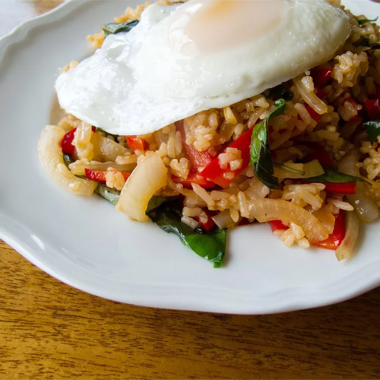

Fried Rice Recipe

A staple of Chinese takeout menus, and an excellent use of leftover rice,
fried rice is a simple dinner that's easy to customize. Toss in any odds
and ends from your produce drawer, whisk in a few eggs, and add a drizzle
of sauce to complete your dish. Here are some fried rice recipes to inspire you.
Ingredients
- 1 tablespoon butter
- 1 (6 ounce) boneless pork loin chop, cut into small pieces
- 1 green onion, chopped
- ¼ cup chopped carrot
- ¼ cup chopped broccoli
- 1 egg, beaten
- 1 cup cold cooked rice
- ¼ cup frozen peas
- 1 ½ tablespoons soy sauce
- ⅛ teaspoon garlic powder
- ⅛ teaspoon ground ginger
Steps
- Melt butter in a large non-stick skillet over medium heat. Add pork, green onion, carrot, and
broccoli; cook and stir until pork is cooked through, 7 to 10 minutes. Transfer pork mixture
to a bowl and return skillet to medium heat.
- Stir egg into the skillet and scramble until completely set. Add pork mixture back into the
skillet; stir in rice, peas, soy sauce, garlic powder, and ground ginger. Cook and stir until
heated through, 7 to 10 minutes.